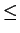
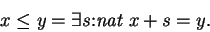

Next: Propositional Inequality
Up: The Natural Numbers
Previous: Square Roots
An important class of functions on the natural numbers
are the order relations, strict less-than and less than or
equal. There are many ways to define these relations;
the library defines (propositional-valued) 
as

It is hoped that the theorems given in the library are an adequate
abstract interface for the relation ,
i.e. any other lemmas are
provable from the ones given without using the details of the
definition. This can be enforced by using the command Freeze Le.
Lego
1998-06-15